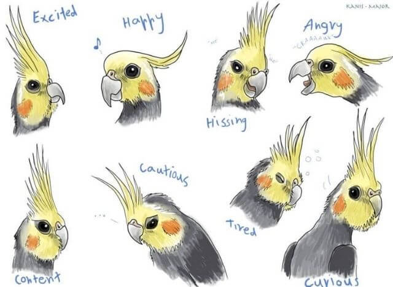

All you need to know before you get that bird!
 The 'Cockatiel' (also called the weiros and quarrian) is one of the most popular bird pets due to they're affectionate and gentle nature.
They have the genus name Nymphicus Hollandicus and are related to cockatoos.
They're native to the semi-arid regions of Australia so they prefer an open environment as wild Cockatiels fly to the ground to forage for food. Naturally, they are seen in pairs or small flocks.
The 'Cockatiel' (also called the weiros and quarrian) is one of the most popular bird pets due to they're affectionate and gentle nature.
They have the genus name Nymphicus Hollandicus and are related to cockatoos.
They're native to the semi-arid regions of Australia so they prefer an open environment as wild Cockatiels fly to the ground to forage for food. Naturally, they are seen in pairs or small flocks.
| Lifespan | 15 to 25 years with good care | Sexual Maturity | 15 to 24 months |
| Height | 12 to 13 inches | Adult Weight | 2 to 4 ounces |
- Personality -
Cockatiels are known for their generally gentle and docile nature, but they can also be feisty and curious when they want to be. They are very affectionate and often like to be petted and held, though they’re not necessarily fond of cuddling. Instead, they simply want to be near their owner and will be very happy to see you.
Cockatiels are very social and require regular interaction with people in order to satisfy their sociable nature. Cockatiels may bond with humans, cage mates, toys, or other cage furnishings. Courtship, mating behavior and egg-laying commonly result.
- Mood -

The tuft feathers at the top of the Cockatiels' head are called its 'Crest'.
The position of their crest feathers (and their body language) can tell you their mood: